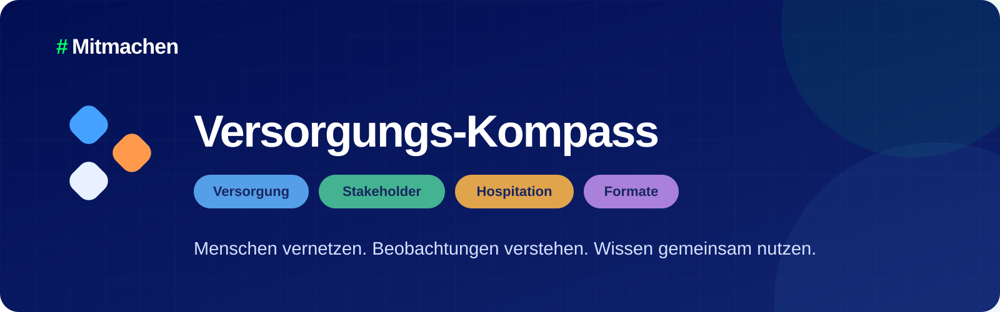

Versorgung#559EE8
Markenkit
Ein konsistentes Dach für #Mitmachen, eine eigenständige Produktmarke für den Versorgungs-Kompass und vier klar codierte Module.

#Mitmachen
Visuelle Identität für das Beteiligungsdach.

Versorgungs-Kompass
Produktidentität mit klar getrenntem Signet und Schriftzug.

Stakeholder#43B391
Hospitation#E0A44D
Formate#A980DA